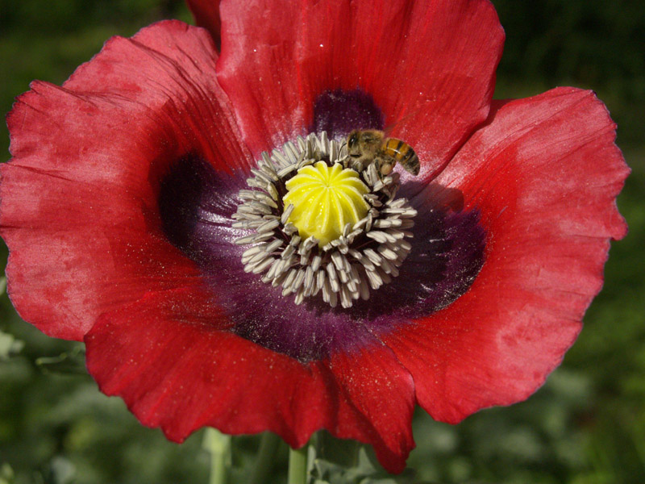
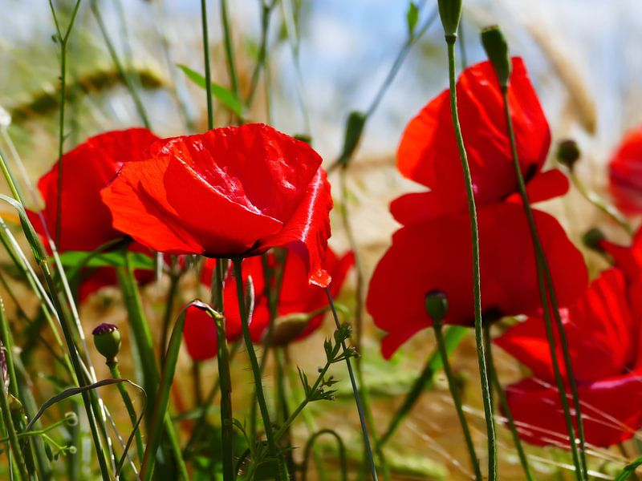
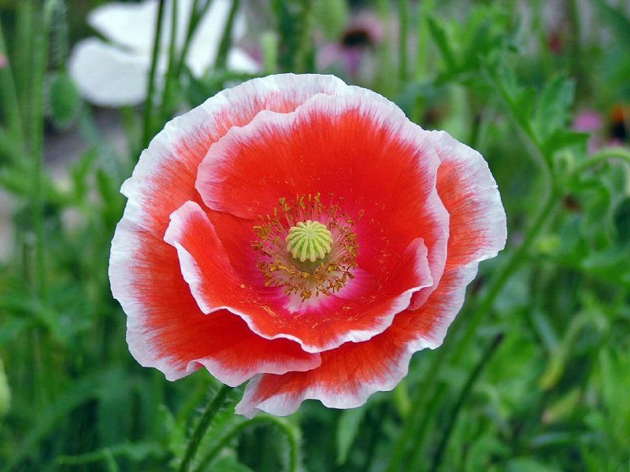
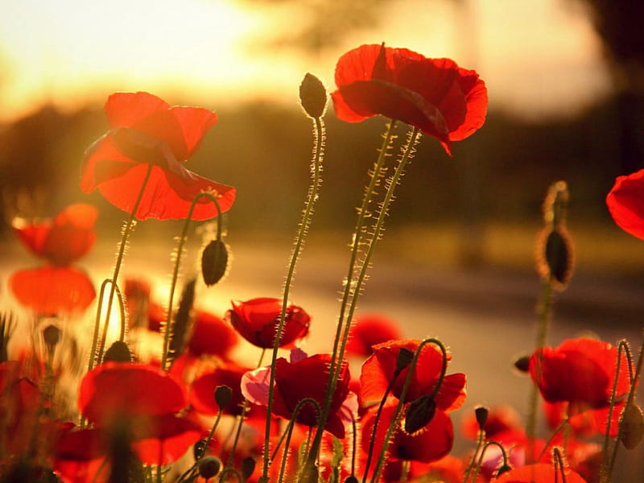

Meaning: Eternal sleep
Origin
The poppy is known for its narcotic effects; it is used to make the sedative opium. According to Greek myth, poppies grew in the land of the dead. They were associated with Demeter, whose daughter, Persephone, was the queen of the underworld.
Gallery



